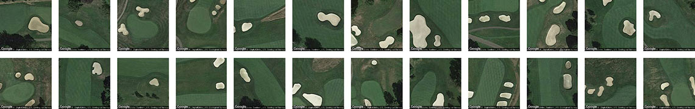
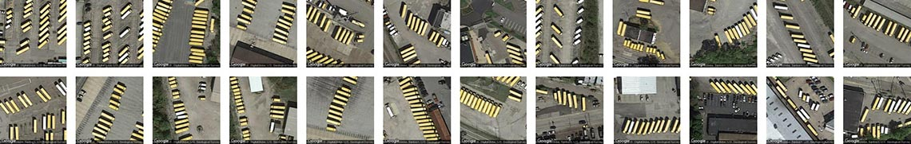
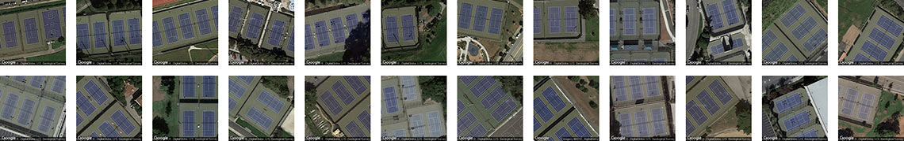
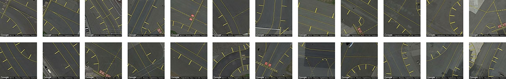
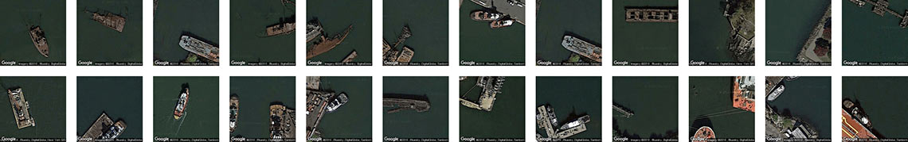

A Prototype for Visual Query-by-Example in Satellite Imagery
We present the alpha version of Terrapattern: "similar-image search" for satellite photos. It's an open-source tool for discovering "patterns of interest" in unlabeled satellite imagery—a prototype for exploring the unmapped, and the unmappable.
Terrapattern provides an open-ended interface for visual query-by-example. Simply click an interesting spot on Terrapattern's map, and it will find other locations that look similar. Our tool is ideal for locating specialized 'nonbuilding structures' and other forms of soft infrastructure that aren't usually indicated on maps.
There has never been a more exciting time to observe human activity and understand the patterns of humanity’s impact on the world. We aim to help people discover such patterns in satellite imagery, with the help of deep learning machine vision techniques.
Terrapattern is ideal for discovering, locating and labeling typologies that aren't customarily indicated on maps. These might include ephemeral or temporally-contingent features (such as vehicles or construction sites), or the sorts of banal infrastructure (like fracking wells or smokestacks) that only appear on specialist blueprints, if they appear at all.
In this section, we share some discoveries of our own, made with the Terrapattern system. It is important to point out that the Terrapattern system was not trained on any of the categories shown below, but instead recognizes them because of their common visual features.
Here, for example, are golf course sand traps identified by our system in the Pittsburgh metro region:

Here, Terrapattern identified some of Pittsburgh's finest school bus depots: 
...purple tennis courts in the Bay Area, 
...certain attractive runway markings from various New York ariports, 
...and a collection of nautical wrecks in NYC-area coastal waters: 
Here are some more example searches you can try: baseball diamonds • semi-trailer trucks on highways • USAF bombers • cracked tarmac • bridges • fracking wells • swimming pools in the woods • Christmas tree farms • tennis courts • wastewater treatment pans • football stadium logos • overpasses • solar panels • scrap yards • transformer stations...
Have you discovered an interesting collection? Please send a tweet with the hashtag #terrapattern and the URL of your search! ➔It has been predicted that, within the next three years, access to daily-updated, whole-earth satellite imagery with sub-meter resolution will become widely available online. There will be many important stories about natural and human activities latent in this data. Without special effort, however, it is doubtful that this imagery will have annotation layers that make such stories discoverable.
In light of this, the Terrapattern prototype is intended to demonstrate a workflow by which users—such as journalists, citizen scientists, humanitarian agencies, social justice activists, archaeologists, urban planners, and other researchers—can easily search for visually consistent "patterns of interest". We are particularly keen to help people identify, characterize and track indicators which have not been detected or measured previously, and which have sociological, humanitarian, scientific, or cultural significance.
Our goal is to provide a geospatial software tool that makes it easy for everyday people, who may lack expertise in machine vision, to specify the thing that they are interested in; to automatically find more examples of that thing; and to provide the locations of those instances in a common data format that easily allows for further examination.
Terrapattern is a "panoptic perceptron" that allows a user to perform arbitrary queries-by-example in satellite imagery. A guest clicks on a "feature of interest" in a satellite image; the Terrapattern system presents a batch of the most similar-looking places nearby; and the guest can then download a list of these locations in GeoJSON format.
For our purposes, "interesting" features are anthropogenic or natural phenomena that are not only socially or scientifically meaningful, but also visually distinctive—thus lending themselves ideally to machine recognition. Examples could include things like animal herds, methane blowholes, factories, destroyed homes, or logging roads. Many other patterns await discovery.
We aim to test the assumptions:
We emphasize that Terrapattern is a limited prototype. As of May 2016, it allows users to search in the greater metropolitan regions of three American cities: New York City, San Francisco, and Pittsburgh (Allegheny County). Altogether more than 2,200 square miles (5700 km²) are fully searchable. Allowing high-resolution searches in an area the size of the United States (e.g. ~3.8M mi² or 9.9M km²) is technically and financially beyond the scope of our project at the current time.
The Terrapattern project seeks to democratize geospatial intelligence. By providing a means by which researchers, journalists, citizen scientists, and artists can quickly and easily scan extremely large geographical areas for specific visual features, our hope is that the public at large will gain the ability to research and answer questions about our world that are otherwise unknowable.
Access to satellite imagery, especially as it can be interpreted through the lens of machine intelligence, is currently controlled by a select few: state-level actors and (increasingly) multinational businesses. Once the exclusive domain of top-secret military surveillance, high-resolution satellite imagery has recently become heavily corporatized. At the forefront of this shift are companies like Orbital Insight, Remote Sensing Metrics and Genscape, which apply machine learning algorithms to satellite imagery in order to sell "actionable intelligence" to hedge funds and other market speculators. For example, in their "US Retail Traffic Index", RS Metrics monitors the number of cars in retail parking lots, in order to estimate the quarterly performance of big-box stores before those results have been released. Similarly, Orbital Insight's "World Oil Storage Index" consists of daily estimates of the amount of oil held in 20,000 storage tanks—intelligence derived from the size of shadows on the interiors of tanks with floating lids. With enormous amounts of money to be made in the trade of such information products, this type of understanding about the forces shaping our world remains very far from being a public good.
We wondered what it would be like to provide an "Orbital Insight for the rest of humanity": a tool that could help those who are concerned about or interested in the world—whether through environmental studies, journalism, humanitarian efforts, social sciences, natural sciences, or artistic inquiry—obtain geospatial understanding of the kind only previously available to a select few. In this section, we highlight a few projects by others which we consider powerfully inspirational illustrations of this: the democratization of machine intelligence for satellite imagery.
At the forefront of environmental efforts is the non-profit organization, Monitoring of the Andean Amazon Project (MAAP), which uses satellite imagery and computer vision to analyze the Amazonian rainforest. In some of their best-known work, supported through the Planet Labs Ambassadors Program, MAAP has successfully detected illegal gold mines, as well as illegal logging roads, which are key precursors to deforestation. Other environmental initiatives have used related techniques to, for example, bust illegal fishing operations.
At the Harvard Humanitarian Initative's "Signal Program on Human Security and Technology", a series of influential projects directed by Nathaniel Raymond has used satellite imaging to investigate war crimes, genocides, and other atrocities. Raymond is among the most outspoken advocates for the use of geospatial intelligence by human rights groups and other non-governmental organizations (NGOs). In one project, Raymond and his team used machine learning techniques to automatically identify Sudanese straw-hut dwellings, known as tukuls, in satellite imagery. Their team's tukul-detector was able to successfully distinguish intact tukuls from ones which had been razed—an excellent proxy for detecting mass killings, in a part of the world where on-the-ground journalism is exceptionally risky.
In another humanitarian project, data scientists from DataKind.org collaborated with members of GiveDirectly, an NGO which gives microgrants to impoverished people in developing nations. In order to know where to focus their efforts, the team developed software to analyze the ratio of straw roofs to metal roofs in each of the districts of a Central African country. This ratio proved to be a good proxy for estimating the relative wealth of each of the districts, for a country otherwise lacking in census data of this sort.
The combination of satellite imaging and machine vision has also had a major impact on our ability to track animal populations. For example, one team of scientists were able to track Antarctic penguin populations—and take measurements of their diets—by observing their poo from space. Another team of scientists was able to locate and count families of Southern Right Whales.
The telescopic perspective of satellite imagery has enormous potential to provide scientific insights that could not be obtained otherwise. For example, "space archaeologist" Dr. Sarah Parcak, a professor at the University of Alabama at Birmingham, has used remote sensing technologies, image processing and computer vision in order to discover ancient Egyptian pyramids and even a previously unknown site of Viking activity in North America. In another fascinating discovery, Dr. Sabine Begall, a professor of Zoology at the University of Duisburg-Essen, has discovered that ruminants have a previously undiscovered geomagnetic sense—essentially, that grazing cows align themselves with the earth's magnetic field.
The arts have the power to provide insights of an altogether different sort. A number of artists have employed various forms of human and/or machine intelligence to the domain of satellite imagery, in order to produce projects that inform, provoke, entertain, and delight. An excellent example of this is the project "Aerial Bold" by Benedikt Groß and Joseph Lee, which is a typeface wholly constructed from letterforms found in satellite imagery. Whereas Groß and Lee use a mixture of crowdsourcing and automated detection, artist Jenny Odell uses a more personalized, curatorial approach in her Satellite Collections project (2009-2011), in which parking lots, silos, landfills, waste ponds are compiled into typological collages. Of her work, Odell writes that "The view from a satellite is not a human one, nor is it one we were ever really meant to see. But it is precisely from this inhuman point of view that we are able to read our own humanity, in all of its tiny, repetitive marks upon the face of the earth. From this view, the lines that make up basketball courts and the scattered blue rectangles of swimming pools become like hieroglyphs that say: people were here."
Other interesting artworks in this space include The Big Atlas of LA Pools (also by Groß & Lee), Onformative Design's Google Faces, and Joshua Begley's stunning Prison Map.
In many of the examples discussed above, researchers developed bespoke visual detectors that were tightly tuned and customized for specific problems. The techniques used in Terrapattern portend a new form of highly generalized detector which can be used in searches by relative laypersons. In this new workflow, it is only important that the patterns of interest are visually consistent enough for algorithmic detection and analysis.
There are a number of burgeoning, visually consistent, and in many cases worrisome phenomena which future versions of Terrapattern could be useful in tracking. These include Concentrated Animal Feeding Operations, or CAFOs; uranium mill tailings deposits; "Gamma Gardens" (also called radiation farms) for mutation breeding; Siberian methane blowholes, which are arising due to global warming; and megafauna poaching. The Terrapattern project is only a prototype—especially in its scale—and we feel we have only scratched the surface of what is possible.
Terrapattern uses a deep convolutional neural network (DCNN), based on the ResNet ("Residual Network") architecture developed by Kaiming He et al. We trained a 34-layer DCNN using hundreds of thousands of satellite images labeled in OpenStreetMap, teaching the neural network to predict the category of a place from a satellite photo. In the process, our network learned which high-level visual features (and combinations of those features) are important for the classification of satellite imagery.
It has been pointed out that many machine-learning breakthroughs are constrained, not by the limitations of algorithms, but by the availability of high-quality training datasets. The Terrapattern project illustrates this situation well. When we began the project, we expected that we could find a pre-existing DCNN model for satellite imagery, such as those hosted at the Caffe Model Zoo. We settled in for a much longer haul when we realized we would have to train our own. To that end, Terrapattern was only possible due to the astonishing crowdsourced mapping effort of the OpenStreetMap project, which has generously categorized large parts of the world with its Nominatim taxonomy. We trained our DCNN using 466 of the Nominatim categories (such as "airport", "marsh", "gas station", "prison", "monument", "church", etc.), with approximately 1000 satellite images per category. Our resulting model, which took 5 days to compute on an nVidia 980 GPU, has a top-5 error rate of 25.4%.
After training the model, we removed the final classification layer of the network and extracted the next-to-last layer of the DCNN. Using this layer of proto-features (a technique called "transfer learning"), we computed descriptions for millions more satellite photos that cover the metropolitan regions of New York, San Francisco, and Pittsburgh. When we want to discover places that look similar to your query, we just have to find places whose descriptions are similar to those of the tile you selected. To perform this search in near real time, we use the SG Trees algorithm for K-Nearest Neighbors.
The Terrapattern search tool features three visualizations: a slippy map, for specifying visual queries; an "Geographical Plot" (or minmap), which shows the locations of search responses in the surrounding metro region; and a "Similarity Plot", which organizes the returned results within an abstract 2D space using Principal Component Analysis, or PCA. The Terrapattern website is built using Ruby and JavaScript, with satellite imagery from Google Maps, while the Geographical PLot and Similarity Plot were created in JavaScript using p5.js.
For more technical information on Terrapattern, including our open-source code, models and datasets, please see this list of technical references and our Github repository.
Terrapattern by Golan Levin, David Newbury, Kyle McDonald et al. is licensed under a Creative Commons Attribution-ShareAlike 4.0 International License. The Terrapattern code and associated datasets are available under the MIT License. Permissions beyond the scope of this license may be available at terrapattern.com. The map data used in this project is ©2015 Google and its data providers.